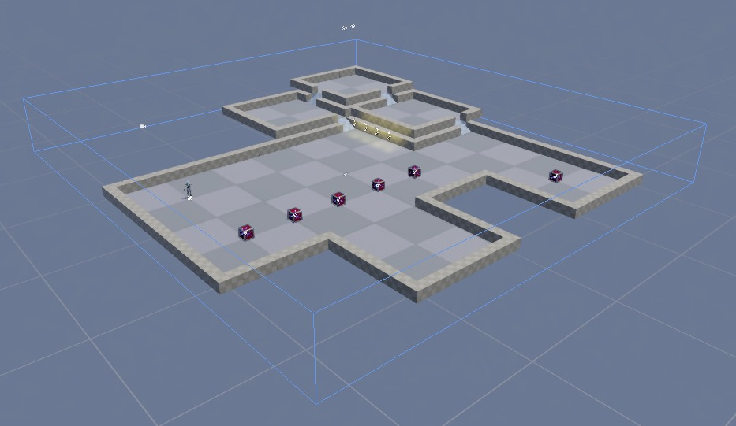
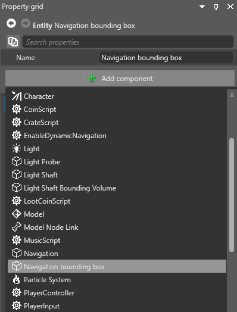
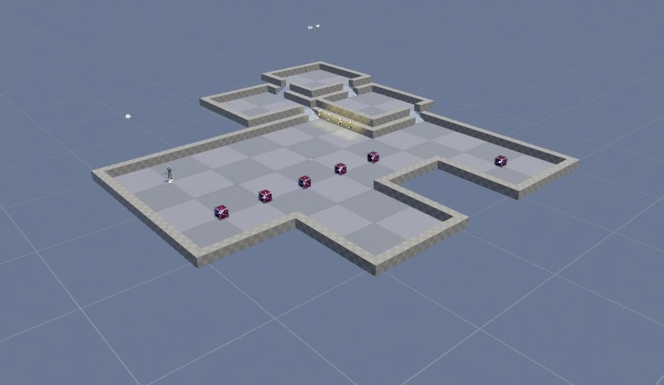

ナビゲーション境界ボックス
初級 レベル デザイナー プログラマー
ナビゲーション境界ボックスは、ナビゲーション メッシュがカバーする領域を定義します。ナビゲーション境界ボックスを使用すると、シーン全体をカバーするメッシュを使用する代わりに、シーン内に小さいナビゲーション領域を作成できます。
シーン エディターでは、境界ボックスは青い輪郭で表示されます。

ナビゲーション境界ボックスを作成する
ナビゲーション境界ボックスを作成するには、ナビゲーション境界ボックス コンポーネントをエンティティに追加します。
シーン内で、境界ボックスを追加するエンティティを選択するか、新しいエンティティを作成します。
エンティティを選択し、［Property grid］で［Add component］をクリックして［Navigation bounding box］を選択します。

ナビゲーション境界ボックスがエンティティに追加されます。
［Navigation bounding box］コンポーネントのプロパティで、XYZ の値を使用して境界ボックスのサイズを設定します。

エンティティの Transform コンポーネントを使用して、境界ボックスをシーン内に配置します。
シーン エディターで境界ボックスの表示と非表示を切り替える
シーン エディターのツールバーでギズモ オプション メニューを開き、［Navigation bounding box］チェックボックスを使用します。

| 境界ボックス非表示 | 境界ボックス表示 (ボックスの青い輪郭に注意) |
|---|---|
|  |